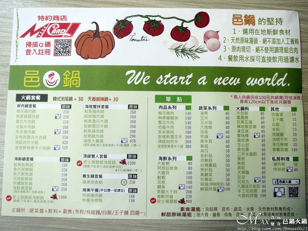
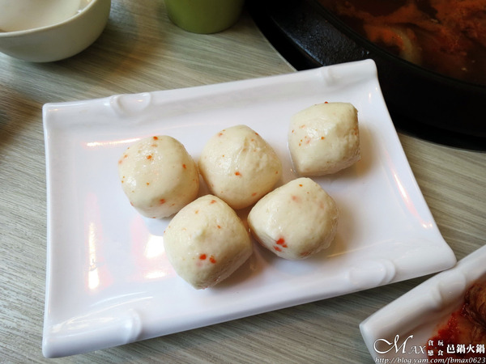

靠窗的四人座位，落地窗的採光性不錯。 怕坐不慣高腳椅的吧檯區這會適合些。
大多是U字型吧檯型的座位，很多石鍋火鍋店都會以這樣的形式呈現。 會現場幫忙做湯頭爆香的動作，也有人控管調整火力。 椅子下有置物處，可以放隨身物品或包包，空間明亮讓人感到舒適。
沾醬區採自助的方式，沙茶已幫忙分好一碗一碗裝。 因為石頭鍋有爆香，本身已有點鹹度，就完全沒用到沾醬。
鍋物採套餐的方式，從248元起就有。 正常都是原味的湯頭，如需換成泡菜鍋或麻辣鍋要加30元。 想吃素的朋友也有蔬食鍋的選擇，免服費務。 有看到新品波士頓龍蝦海鮮鍋好誘人，下次再來吃。 平日商業午餐套餐188元起，價格上有一定的吸引力。

套餐附贈的飲品冬瓜檸檬，冬瓜塊熬煮加上現榨檸檬。 酸甜沁涼，真的滿好喝，是可續杯的。 當天有看到客人專程來外帶冬瓜檸檬的，原來這是後來多的服務。
飲料還有決明子茶，也是自行煮的。 無糖的決明子，喝起來舒服，會慢慢回甘。 兩種飲品是可以交換續杯，可別浪費。
原來是528元，因換湯頭加30元，所以是558元。 湯頭微酸微辣，味道很溫和，最怕喝到那種偏酸的湯。 煮火鍋料或涮肉片都很搭，相當爽口開胃。
菜盤好豐盛，食材的種類也多。 基本的菜類、火鍋類、玉米、九層塔花枝丸及蛤蜊等。 強調嚴選在地的新鮮食材。
將菜盤的內容物置入湯頭內，光看畫面就很豐富。 份量其實不少，煮了將近兩次才都煮完。
香菇的菇味夠，豆腐軟嫩，玉米滿鮮甜。 芋頭綿密鬆鬆，九層塔花枝丸獨特九層塔香氣好吃耶！
原肉現切，絕不使用組合肉。 上桌的肉片已將盤子覆蓋到看不見。 油花超級漂亮，是Choice等級的黑牛。
牛小排肉片的厚度切的薄厚適中。 下去輕涮個幾秒即可享用。 肉質鮮嫩，口感極為鮮甜，重點滿口肉汁好好吃，推薦。
朋友點的海陸大餐鍋，湯底是原味湯頭。 有先在廚房內爆香過端到客人面前再加入湯底。 原味湯頭是由大骨、雞骨、柴魚、昆布、蔬菜和水果等熬煮而成。 剛開始喝的湯頭很清淡，但愈煮後會愈來愈甜，朋友一直狂喝XD
海陸大餐鍋，有海鮮總匯+牛、豬、雞腿三擇一。 海鮮總匯有蛤蜊、鮮蝦、魷魚、鯛魚片和扇貝。 蝦子是每日市場新鮮採買，與蛤蜊都很新鮮。 魷魚Q彈有嚼勁，鯛魚肉質好細緻。 扇貝因為只有一個，朋友搶去吃，則沒有嚐到。

是用整隻完整的無骨雞腿排。 雞肉是溫體的，沒有去做醃製的動作。 帶皮的雞腿，肉質軟嫩，很天然的滋味，散出自然的清甜味，賀呷。
店家推薦的蟹味棒，實際吃後。 發現蟹味棒的口感都差不多，沒有到很驚豔的程度。 甜嫩又細膩，感覺比較挑人吃的。
魚漿等製作的外皮，內餡咬開是會爆餡的濃郁芝士。 口感很鮮甜，十分可口，還不賴。
邑鍋新品，使用古法手工去製作的韓式泡菜。 自然發酵的泡菜，酸中帶辣，辣度是有後勁的。 微微的酒香很迷人，味道很合，不會不舒服。
副餐選了烏龍麵，有附顆洗選蛋。 將半熟蛋、Q彈烏龍麵再佐點沙茶醬辣椒等，我愛這樣的ending。
引自:http://blog.yam.com/fbmax0623/article/137130466